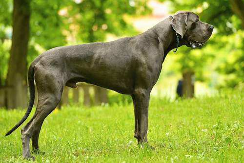

| דף ראשי | גזעים | מחלות | רקעים ותמונות | סקר | צרו קשר |
|---|
| קוקר ספאנייל |
| סמוייד |
| שפיץ יפני |
| פומרניאן |
| פודל |
| דני ענק |
| דלמטי |
| רועה גרמני |
| רועה קווקזי |
| רועה בלגי |
| בולדוג אמריקאי |
| בולדוג צרפתי |
| בולדוג אנגלי |
| צ'או צ'או |
| שיצ'ו |
| אמסטף |
| פינצ'ר |
| רוטווילר |
| דוברמן |
| האסקי סיבירי |
דני ענק
מידע נוסף
ידוע במידותיו הענקיות ובאופיו העדין, הדני הענק משלב במראהו המלכותי כבוד, כוח ואלגנטיות. לא סתם מכונה גזע מדהים זה "האפולו של הכלבים". גודלו האדיר שיכול להתפרש לעתים כמאיים רק מתגמד נוכח ליבו הרחב. ב1965 נבחר הדני לכלב הלאומי של מדינת פנסילבניה ולאחרונה נבחר לכלב הגבוה בעולם בספר השיאים של גינס.
דני ענק - מקור הגזע והיסטוריה
כלבים דומים לדני הענק היו ידועים ביוון, רומא ומצרים העתיקה. גזע מיוחד זה הוא בן כ-400 שנה, צאצא של הבולדוג הגרמני. מקורו בגרמניה, שם נוצר מהכלאה בין מסטיף אנגלי לזאב אירי ותפקידו העיקרי היה לצוד חזירי בר. עד היום לא ידוע הקשר בין דנמרק לגזע זה, שכן הוא "נוצר" ופותח בגרמניה. ב1749 קיבל הדני סופית את שמו על ידי סופר צרפתי בשם ג'ורג' לואי בופון.
דני ענק - נתונים ומאפיינים
הדני הזכר יהיה בדרך כלל יותר מסיבי מהנקבה, מעט יותר גבוה ומבנה עצמותיו רחב יותר. מתנשא לגובה של לא פחות מ75 ס"מ, היחס בין אורכו לגובהו יהיה שווה, מה שנותן צורה מרובעת, ומשקלו יגיע למינימום של 55 ק"ג. הנקבה מתנשאת לגובה של לא פחות מ70 ס"מ ולעתים מבנה גופה יהיה קצת יותר ארוך (בהתאם לגובה). ראש רחב, פנים מלאות הבעה, שיניים חזקות וגדולות, צוואר וכתפיים שריריות ומבנה גוף גאה הם שנותנים ל"ענק העדין" את מראהו המלכותי. צבעים: חום זהוב - לעתים האוזניים וקצה הזנב יהיו שחורים. מנומר - פרווה זהובה, נקודות \ פסים שחורים לאורך הגוף. כחול - צבע כחול כהה ומבריק. לעתים כתם לבן על החזה. שחור - לעתים כתם לבן על החזה. דלמטי - צבע לבן עם כתמים שחורים מפוזרים על הגוף.
מחלות נפוצות וטיפול - כלב דני ענק
תוחלת החיים של הגזע נמוכה מהרגיל כאשר היא מגיעה לממוצע של 10 שנים. הדני הענק פגיע למחלות שבדרך כלל תוקפות גזעים גדולים, כמו גידולים, בעיות קיבה, בעיות לב, פגיעות זנב והיפדיספלסיה- מחלה שיכולה לגרום לנכות במידה והיא בדרגת חומרה גבוהה. טיפולים וביקורים קבועים אצל הווטרינר יכולים לגלות מחלות בשלב מוקדם ואף למנוע מצבים לא רצויים כאלה.
